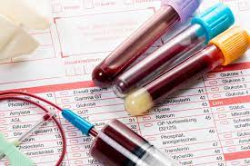

Общий анализ крови (ОАК) – это наиболее доступный метод первичной оценки состояния организма, результаты которого, наряду с общим анализом мочи и биохимическим анализом крови, входят в алгоритмы диагностики большинства заболеваний. У здорового человека кровь по своему составу относительно постоянна, но реагирует практически на любые патологические изменения в организме. Поэтому, чтобы понять, что происходит с человеком, какие исследования назначить в дальнейшем или определиться с лечением, врач, в первую очередь, всегда назначает ОАК.
В общем анализе крови выделяют следующие главные показатели:
- Лейкоциты
- В крови взрослого человека лейкоцитов содержится 4—9·109/л. Содержание лейкоцитов в крови не является постоянным, а динамически изменяется в зависимости от времени суток и функционального состояния организма. Так, количество лейкоцитов обычно несколько повышается к вечеру, после приёма пищи, а также после физического и эмоционального напряжения.играют главную роль в специфической и неспецифической защите организма от внешних и внутренних патогенных агентов, а также в реализации типичных патологических процессов (например, воспаления).
- Эритроциты
- Эритроциты – это красные клетки крови в форме двояковыгнутого диска, именно они содержат гемоглобин. Основной функцией эритроцитов является обеспечение газообмена, транспортировка кислорода к тканям и органам. Также эти клетки учавствуют в поддержание кислотно-основного состояния, влияют на реологические свойства (вязкость) крови, учавствуют в иммунных процессах путем взаимодействия с антителами, циркулирующими иммунными комплексами.
- Гемоглобин
- Гемоглобин – это основной компонент эритроцитов, он является переносчиком кислорода от легких к тканям. Уровень гемоглобина может изменяться у клинически здоровых лиц, так как некоторые факторы, например, высота проживания над уровнем моря, курение, беременность, обезвоживание, или наоборот, повышенное потребление жидкости, физическая нагрузка могут влиять на величину этого показателя. Снижение концентрации гемоглобина может указывать на наличие анемии, что требует обязательного дообследования для выяснения причины заболевания и подбора правильного лечения.
- Тромбоциты
- Основной функцией этих элементов является формирование тромбоцитного агрегата, первичной пробки, закрывающей место повреждения сосуда и предоставления своей поверхности для ускорения ключевых реакций плазменного свёртывания. Таким образом, тромбоциты обеспечивают нормальную проницаемость и резистентность стенок микрососудов.